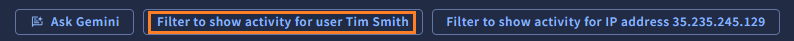
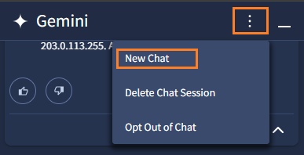

4. Gemini 活用
それでは、AI を使った活用方法を確認していきましょう！
4.1 テンプレートを利用したログ検索
まず最初に Gemini in SecOps のテンプレートプロンプトを利用して、ログ検索の方法を確認します。 このテンプレートは、検索や調査、脅威インテリジェンスを使った分析など、セキュリティ運用でよく行われるシナリオが用意されています。
１．画面左上の Google SecOps ボタン をクリックして、トップページに移動します。

２．画面右上の Gemini ボタン をクリックすると、画面右にチャットウィンドウが開きます。

３．Search and Investigate をクリックし、テンプレートの中から Find failed user logins over the last 3 days (過去3日間でログインに失敗したログを検索) をクリックします。

４．Gemini がクエリを作成して、チャットボックスに表示してくれます。内容を確認して Run Search ボタンをクリックします。

５．クエリの実行結果が画面左側に表示されます。画面上部では先ほど確認したクエリが入力されており、画面下部ではクエリの実行結果と Gemini による内容の要約が表示されています。

Check
ユーザログインに関連するログとして、Microsoft や Amazon、Google Cloud Platform で生成されたログが検索されていることが確認できます。また、"S-1-0-0" というユーザーアカウントでログイン失敗が多いと要約されています。
６．追加の調査として Filter to show activity for user Tim Smith をクリックすると、Results タブに移動し、そのユーザのみのログを確認することができます。時系列でのイベント数の分布や、具体的なログの詳細を確認することができます。


Check
画面上部の ADD FILTER 部分に user=Tim Smith と表示が追加されたことに注意してください。これはクエリで検索した結果に対して、さらにフィルター機能で出力を抽出している形になっています。このフィルター機能は簡単に追加、除外ができるため、手動の調査が行いやすくなっています。また、フィルター条件をクエリ文に追加することも可能です。
７．その他のテンプレートも試してみましょう。画面右上のメニューアイコンから New Chat をクリックすることで、新しいテンプレートを実行できます。

Check
ここで時間をとって、Search and Investigate > Search for outbound network connections to China (中国への通信を検索) のテンプレートを同様の手順で試してみてください。※ログがヒットしない場合は検索対象期間を広げてみてください
８．次のステップ に移動します。